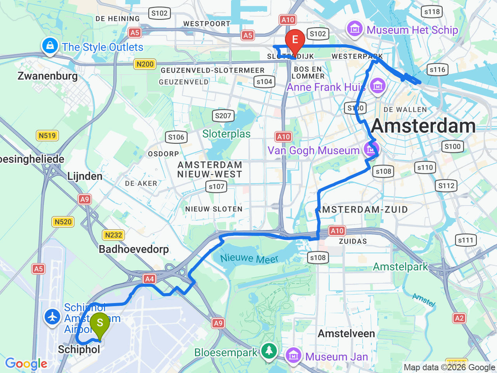
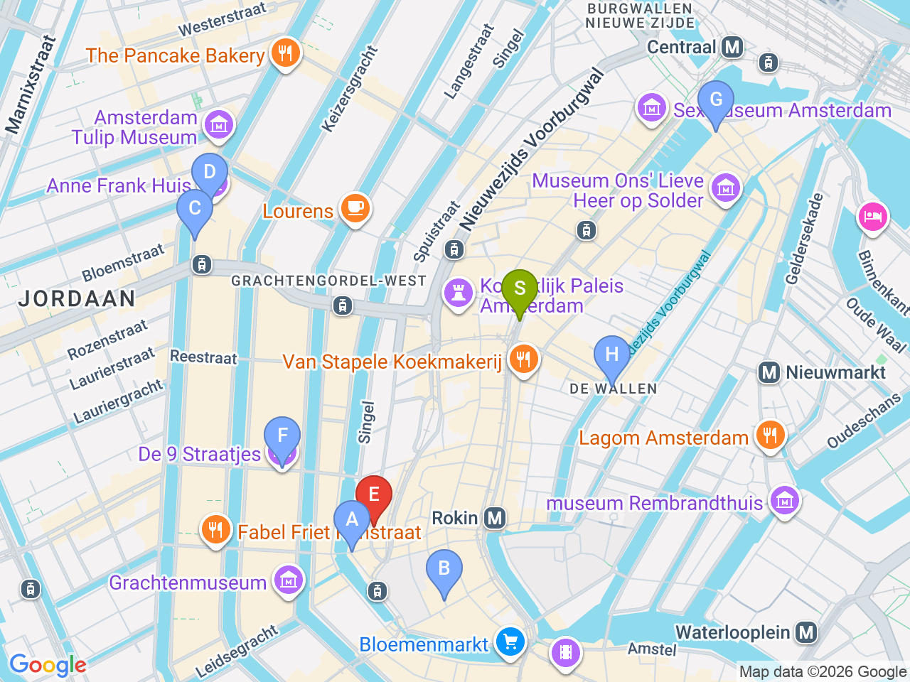

Day 02 · 2026-08-17（一）
荷蘭・阿姆斯特丹 Day 2/6
阿姆斯特丹市區巡禮：運河・王宮・水壩廣場・紅燈區
早班機抵達，順路在 Sloterdijk 寄放行李後展開市區行程，晚餐嚐印尼豐盛桌料理
機場→飯店（電車/公車）

市區景點地圖

彈性探索景點DAY 02
| 地點 | 地點 (英文) | 預計停留(分鐘) | 價格 | 備註 |
|---|---|---|---|---|
| 王宮 & 水壩廣場 | ADam Square, Amsterdam | 45 | 王宮內部另計門票 | 王宮外觀+廣場為主，內部是否開放依當天公告 |
| Lanskroon Bakery | BLanskroon, Singel 385, Amsterdam | 15 | 約 €3-5 | 招牌糖漿鬆餅(stroopwafel)，近 Spui |
| Vleminckx Sausmeesters | CVleminckx Sausmeesters, Voetboogstraat 33, Amsterdam | 15 | 約 €4-6 | 比利時薯條配20多種醬料，就在 Lanskroon 附近 |
| 西教堂 | DWesterkerk, Amsterdam | 30 | 阿姆斯特丹最高教堂尖塔，鄰近安妮之家 | |
| 安妮之家（外觀） | FAnne Frank House, Amsterdam | 20 | 免費（外觀） | 依規劃不進場，外觀拍照即可 |
| 九街小巷自由閒逛 | GDe 9 Straatjes, Amsterdam | 45 | Jordaan 邊緣的特色小店街區，隨興逛 | |
| 午餐：Pancakes Amsterdam Centraal | HPancakes Amsterdam, Prins Hendrikkade 48, Amsterdam | 60 | 見上方三餐資訊 | 中央車站對面、紅燈區入口 |
| 紅燈區 | IRed Light District, Amsterdam | 45 | 白天先熟悉環境，晚餐後若還有體力可再走一次夜晚氣氛 | |
| 晚餐：Kantjil & de Tijger | JKantjil & de Tijger, Spuistraat 291, Amsterdam | 90 | 見上方三餐資訊 | 荷蘭殖民時期招牌料理 Rijsttafel（豐盛桌），建議事先訂位 |
每日三餐
午餐
Pancakes Amsterdam CentraalPancakes Amsterdam Centraal約 €12–16／人
📍 Prins Hendrikkade 48, Amsterdam中央車站對面、紅燈區入口，Pancakes Amsterdam 的分店之一，份量大可當正式午餐
晚餐
Kantjil & de Tijger（印尼豐盛桌）Kantjil & de Tijger約 €30–40／人
📍 Spuistraat 291-293, Amsterdam荷蘭殖民時期留下的招牌料理 Rijsttafel（豐盛桌），第一晚很適合體驗；建議事先訂位
住宿資訊
XO Hotels Park West
📍 Molenwerf 1, 1014 AG AmsterdamCheck-in15:00
鄰近 Amsterdam Sloterdijk 車站（步行約10-15分鐘）與 Westerpark；到 Amsterdam Centraal 搭火車約6分鐘、班次密集。今天抵達時間早（約07:00落地），check-in 前可先請櫃檯寄放行李